20 Magnetic fields
Magnetic forces, Hall effect, fields due to currents and electromagnetic induction
Learning objectives
By the end of this chapter, you should be able to:
- represent magnetic fields using directed field lines;
- use \(F=BIL\sin\theta\) and Fleming’s left-hand rule;
- use \(F=BQv\sin\theta\) for moving charges;
- explain circular motion of charges in uniform magnetic fields;
- derive and use the Hall-voltage equation;
- sketch fields due to straight wires, coils and solenoids;
- explain forces between parallel current-carrying conductors;
- define magnetic flux and flux linkage;
- apply Faraday’s and Lenz’s laws.
20.1 Concept of a magnetic field
Magnetic fields and field lines
A magnetic field is a field of force produced by moving charge or a permanent magnet. Field lines show the direction in which a north magnetic pole would move. Outside a bar magnet they run from north to south; inside the magnet they return from south to north.
The tangent to a field line gives the local field direction. Closer spacing represents greater magnetic flux density. Field lines never cross.
Common notation
- \(\odot\) represents a vector out of the page, like the tip of an arrow.
- \(\otimes\) represents a vector into the page, like the tail feathers of an arrow.
Use the right-hand grip rule for a current: thumb in the direction of conventional current, curled fingers in the direction of the magnetic field.
20.2 Force on a current-carrying conductor
Magnetic force on a wire
For a straight conductor of active length \(L\) carrying current \(I\) in a uniform field of flux density \(B\),
\[F=BIL\sin\theta,\]
where \(\theta\) is the angle between the current and the magnetic field. Force is maximum at \(90^\circ\) and zero when the wire is parallel to the field.
Direction and flux-density definition
Fleming’s left-hand rule gives mutually perpendicular directions:
- first finger: magnetic field;
- second finger: conventional current;
- thumb: force or motion.
Magnetic flux density is the force per unit current per unit length on a wire placed perpendicular to the field:
\[B=\frac{F}{IL}.\]
Thus \(1\ \mathrm{T}=1\ \mathrm{N\ A^{-1}\ m^{-1}}\).
20.3 Force on a moving charge
Magnetic force on a particle
For charge \(Q\) moving at speed \(v\),
\[F=BQv\sin\theta.\]
The force direction for a positive charge follows the conventional-current direction in Fleming’s rule; reverse it for a negative charge. Magnetic force is perpendicular to velocity, so it changes direction but does no work and does not change speed.
Circular motion
When \(\vec v\perp\vec B\), magnetic force supplies centripetal force:
\[BQv=\frac{mv^2}{r}, \qquad r=\frac{mv}{|Q|B}.\]
The angular speed and period are
\[\omega=\frac{|Q|B}{m}, \qquad T=\frac{2\pi m}{|Q|B}.\]
A velocity component parallel to the field is unchanged, producing a helical path.
Hall effect
Charge carriers moving through a conductor in a perpendicular magnetic field are deflected, producing a transverse Hall voltage. At equilibrium, electric and magnetic forces balance.
For carrier number density \(n\), charge magnitude \(q\), current \(I\) and sample thickness \(t\),
\[V_H=\frac{BI}{ntq}.\]
Hall polarity identifies the sign of charge carriers, while a calibrated Hall probe measures \(B\).
Velocity selection
In crossed electric and magnetic fields, forces can oppose:
\[QE=BQv.\]
Particles pass undeflected only when
\[v=\frac{E}{B}.\]
20.4 Magnetic fields due to currents
Field patterns
- Long straight wire: concentric circular field lines.
- Flat circular coil: a dipole-like pattern, strongest through the centre.
- Long solenoid: strong, nearly uniform parallel field inside and weak return field outside.
A ferrous core increases the field in a solenoid because it becomes magnetised and adds to the field produced by the current.
Parallel currents
Each current-carrying wire lies in the magnetic field produced by the other. Currents in the same direction attract; currents in opposite directions repel. Newton’s third law gives equal and opposite forces on the two wires.
20.5 Electromagnetic induction
Magnetic flux and flux linkage
Magnetic flux through area \(A\) is
\[\Phi=BA\cos\theta,\]
where \(\theta\) is the angle between \(\vec B\) and the normal to the area. Its unit is the weber (Wb).
For a coil of \(N\) turns, magnetic flux linkage is
\[N\Phi.\]
Faraday’s law
The magnitude of induced e.m.f. equals the rate of change of magnetic flux linkage:
\[|\mathcal E|=\left|\frac{\Delta(N\Phi)}{\Delta t}\right|.\]
A larger number of turns, stronger field, larger area or faster change produces a larger induced e.m.f.
Lenz’s law
The induced current is in a direction that opposes the change producing it. Including direction,
\[\mathcal E=-\frac{d(N\Phi)}{dt}.\]
The minus sign expresses energy conservation: an induced current cannot reinforce the change that created it without external work.
Ways to change flux linkage
An e.m.f. can be induced by changing magnetic flux density, coil area, coil orientation, number of linked turns, or relative position of magnet and coil. A stationary magnet and stationary coil produce no e.m.f. even when the flux is large; the flux linkage must change.
Structured Questions
20.1 Magnetic Fields - Easy
Example 1 · Fields around wires and force on a conductor · 20.1 SQ Easy Q1
(a) A long straight wire passes through a piece of card. There is a current in the wire, as shown in Fig. 1.1a.
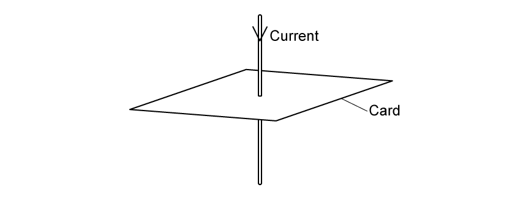
The current in the wire produces a magnetic field around the wire.
(i) On Fig. 1.1b, draw the magnetic field around the wire. Show the direction by drawing an arrow on each field line. [2]
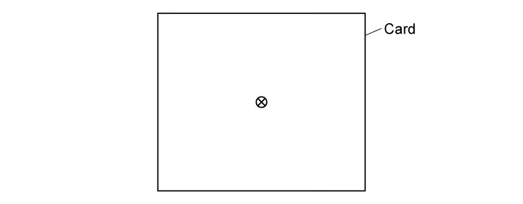
(ii) Two identical wires with the same current pass through a different piece of card. On Fig. 1.1c, draw the magnetic field around the wires. [2]
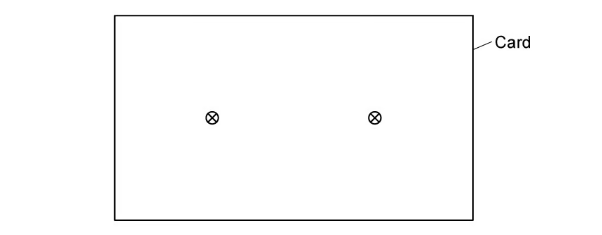
[4 marks]
(b) The current-carrying wire is placed in a uniform magnetic field.
(i) State the equation, and define all the variables, for the force on a current-carrying wire in a uniform magnetic field at different angles. [2]
(ii) Describe how the wire should be placed to experience 1. the maximum force and 2. no force. [2]
[4 marks]
(c) A current-carrying conductor is placed at right angles to a uniform magnetic field of flux density \(15\times10^{-3}\ \mathrm{T}\). Its length is \(1.2\ \mathrm{m}\) and current is \(1.5\ \mathrm{A}\). Calculate the magnetic force. [2 marks]
(d) The conductor is rotated to \(30^\circ\) to the magnetic field. Calculate the new force. [2 marks]
Show mark scheme / model answer
- (a)(i) Draw concentric circles centred on the wire
[1], clockwise because current is into the card.[1] - (a)(ii) Draw clockwise circular fields around both wires, with the fields opposing between the wires and reinforcing outside.
[2] - (b)(i) \(F=BIL\sin\theta\), where \(B\) is flux density, \(I\) current, \(L\) active length and \(\theta\) the angle between current and field.
[2] - (b)(ii) Maximum force: wire perpendicular to the field. No force: wire parallel to the field.
[2] - (c) \(F=(15\times10^{-3})(1.5)(1.2)=2.7\times10^{-2}\ \mathrm{N}\).
[2] - (d) \(F=BIL\sin30^\circ=1.35\times10^{-2}\ \mathrm{N}\).
[2]
Example 2 · Fleming’s rule and electron circular motion · 20.1 SQ Easy Q2
(a) Fleming’s left-hand rule is shown in Fig. 1.1.
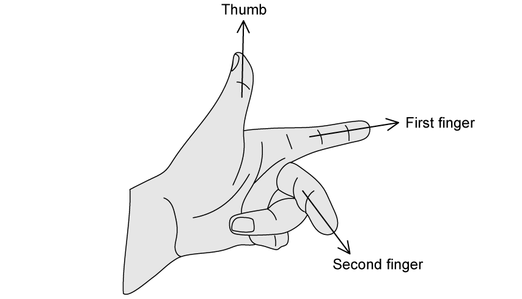
State what is represented by the direction of (i) the thumb, (ii) the first finger and (iii) the second finger. [3 marks]
(b) Fig. 1.2 shows a magnetic field.
(i) State whether the field acts into or out of the page. [1]
(ii) An electron enters at A. Draw 1. the force arrow and 2. its path. [4]
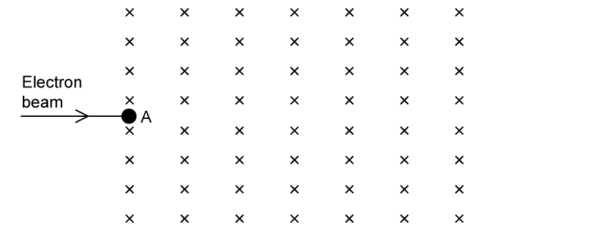
[5 marks]
(c) For \(F=Bqv\), (i) state the meanings of \(B\), \(q\) and \(v\); (ii) state the name and equation of the force causing circular motion. [6 marks]
(d) The electron speed is \(3.0\times10^6\ \mathrm{m\ s^{-1}}\) and \(B=3.2\times10^{-3}\ \mathrm{T}\).
(i) Show that \(r=mv/(Bq)\). [3]
(ii) Calculate \(r\). Use \(m_e=9.11\times10^{-31}\ \mathrm{kg}\) and \(|e|=1.60\times10^{-19}\ \mathrm{C}\). [2]
[5 marks]
Show mark scheme / model answer
- (a) Thumb: force/motion; first finger: magnetic field; second finger: conventional current.
[3] - (b)(i) Into the page.
[1] - (b)(ii) A positive charge moving right would be forced upwards, so the electron force is downwards. Draw a downward force arrow and a circular path curving downwards.
[4] - (c)(i) \(B\): magnetic flux density; \(q\): charge; \(v\): speed perpendicular to the field.
[3] - (c)(ii) Centripetal force, \(F=mv^2/r\).
[3] - (d)(i) Equate \(Bqv=mv^2/r\) and rearrange to obtain \(r=mv/(Bq)\).
[3] - (d)(ii) \(r=(9.11\times10^{-31})(3.0\times10^6)/[(3.2\times10^{-3})(1.60\times10^{-19})]=5.3\times10^{-3}\ \mathrm{m}\).
[2]
Example 3 · Magnetic directions and a rectangular loop · 20.1 SQ Easy Q3
(a) Positive charges pass through different magnetic fields. State the missing direction between \(B\), \(v\) and \(F\) in each scenario in Table 1.1. [5 marks]
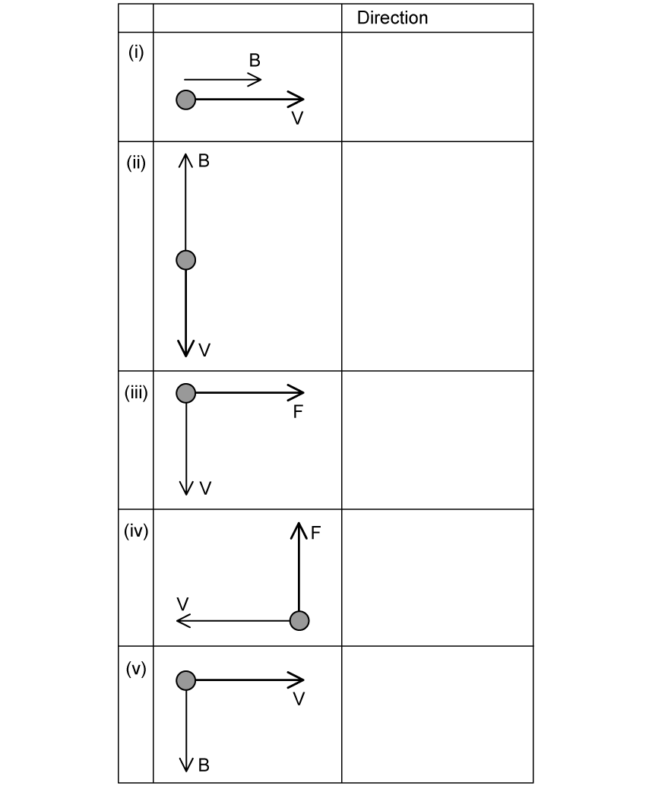
(b) A rectangular loop ABCD, width \(6.0\ \mathrm{cm}\) and length \(9.0\ \mathrm{cm}\), carries \(3.5\ \mathrm{A}\) in a uniform \(0.75\ \mathrm{T}\) field.
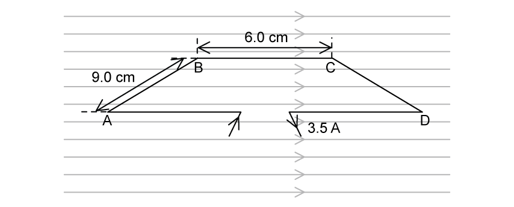
Draw force arrows on (i) AB and (ii) CD. [2 marks]
(c) Calculate the force on (i) AB [2] and (ii) BC [1]. [3 marks]
(d)(i) Describe the motion after current is switched on. [1]
(ii) State the effect on force on CD if 1. \(B\) is halved, 2. length is multiplied by 4, 3. current is reduced by 20%. [3]
[4 marks]
Show mark scheme / model answer
- (a) (i) \(F=0\); (ii) \(F=0\); (iii) \(B\) into the page; (iv) \(B\) out of the page; (v) \(F\) into the page.
[5] - (b) Force on AB points down; force on CD points up.
[2] - (c)(i) \(F=BIL=(0.75)(3.5)(0.090)=0.24\ \mathrm{N}\).
[2] - (c)(ii) BC is parallel to the field, so \(F=0\).
[1] - (d)(i) The loop rotates anticlockwise.
[1] - (d)(ii) Force is halved; multiplied by 4; reduced to \(0.80\) of its original value.
[3]
20.1 Magnetic Fields - Medium
Example 4 · Planning an induction experiment · 20.1 SQ Medium Q1
A circular coil P carrying alternating current produces a changing magnetic field. Similar coil Q is coaxial with P, with centre separation \(x\). An e.m.f. \(E\) is induced in Q.
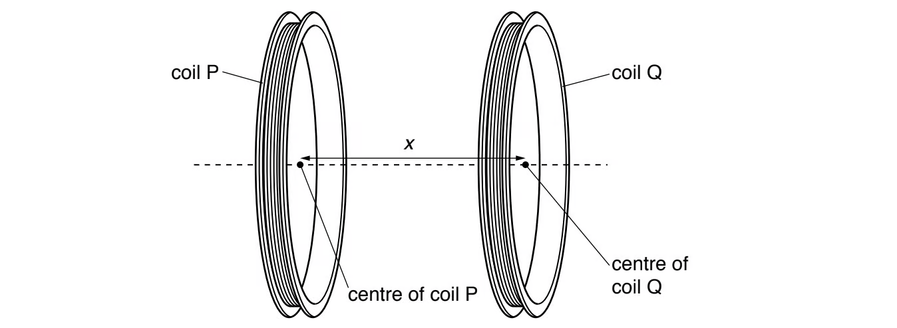
It is suggested that
\[E=IZe^{-kx},\]
where \(I\) is current in P and \(k\), \(Z\) are constants.
Plan a laboratory experiment to test the relationship. Draw the arrangement and explain how results determine \(k\) and \(Z\). Include procedure, measurements, control variables, analysis and safety. [15 marks]
Show mark scheme / model answer
- Connect P to a sinusoidal signal generator/a.c. supply in series with an ammeter; connect Q to an a.c. voltmeter or oscilloscope. Support the coils coaxially on stands.
[3] - Measure centre-to-centre \(x\) with a ruler; account for half the width of each coil.
[2] - Vary \(x\) and record induced r.m.s. e.m.f. \(E\). Repeat and average.
[2] - Keep \(I\), supply frequency, coil turns, coil geometry and relative orientation constant; use a variable resistor to maintain \(I\).
[3] - Take logarithms: \(\ln E=-kx+\ln(IZ)\). Plot \(\ln E\) against \(x\); a straight line supports the model.
[2] - \(k=-\)gradient and \(Z=e^{\text{intercept}}/I\).
[2] - Avoid touching a hot coil/use a modest current or switch off between readings.
[1]
Example 5 · Hall voltage in a conducting slice · 20.1 SQ Medium Q2
A thin conducting slice has labelled faces and is normal to a uniform field \(B\). Electrons enter at right angles to face SRXY.
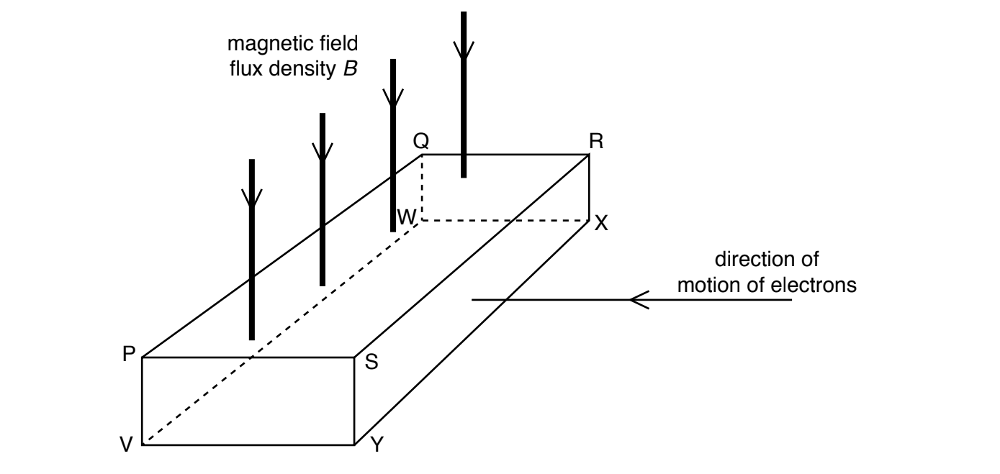
(a)(i) Identify the two faces between which Hall voltage is produced. [1]
(ii) State and explain which face is more positive. [2]
[3 marks]
(b) \(V_H=BI/(ntq)\).
(i) Use letters to identify distance \(t\). [1]
(ii) Electrons are replaced by positive carriers moving in the same direction. State and explain the effect on Hall-voltage polarity. [2]
[3 marks]
Show mark scheme / model answer
- (a)(i) Faces PSVY and QRWX.
[1] - (a)(ii) Electrons are deflected towards QRXW, which becomes negative; PSVY is more positive.
[2] - (b)(i) \(t\) may be PV, SY, RX or QW.
[1] - (b)(ii) Positive and negative carriers are deflected in opposite directions for the same velocity, so charge sign and deflection both reverse; Hall polarity is unchanged.
[2]
Example 6 · Parallel wires and solenoid field · 20.1 SQ Medium Q3
(a) State and describe the conditions for a copper wire in a magnetic field to experience a magnetic force. [2 marks]
(b) Two long parallel current-carrying wires are near each other in a vacuum. Explain why they exert magnetic forces on each other. [3 marks]
(c) A long air-cored solenoid produces the field shown. Draw field-direction arrows at B, C and D. [3 marks]
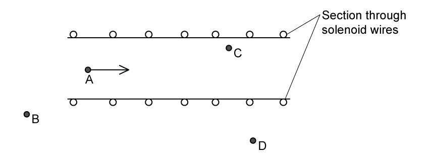
(d) Compare flux density (i) at A and C and (ii) at A and D. [2 marks]
Show mark scheme / model answer
- (a) The wire must carry current and have a component of current perpendicular to the magnetic field.
[2] - (b) Each wire produces a circular magnetic field; the other current lies in this field and experiences \(F=BIL\). The forces are equal and opposite; same-direction currents attract and opposite-direction currents repel.
[3] - (c) C points right like A; B and D are in the external return field and point left.
[3] - (d)(i) A and C have approximately equal flux density in the uniform interior.
[1] - (d)(ii) Flux density at A is greater than at D because the external field is weaker.
[1]
20.2 Electromagnetic Induction - Easy
Example 7 · Faraday’s law and Lenz’s law · 20.2 SQ Easy Q1
(a) State Faraday’s law (i) in words [2] and (ii) as an equation, defining all quantities [2]. [4 marks]
(b) Complete: “The ______ of an induced e.m.f. is always set up in a way such that it ______ the change in magnetic flux ______ that causes it.” Use: attracts opposes density direction linkage magnitude. [3 marks]
(c) Rewrite the equation in (a)(ii) to include Lenz’s law. [1 mark]
(d) A small coil connected to a sensitive voltmeter is near a current-carrying solenoid. State two different ways to induce an e.m.f. in the coil. [2 marks]
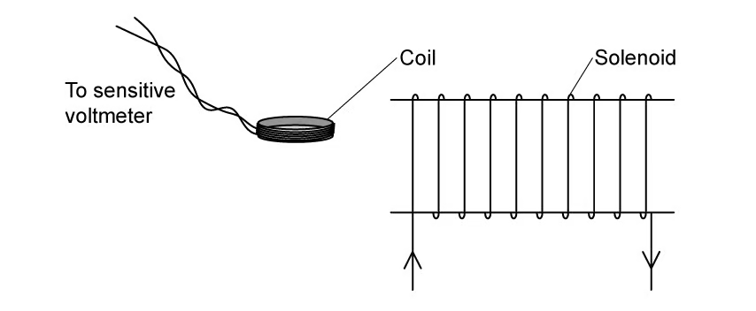
Show mark scheme / model answer
- (a)(i) Induced e.m.f. is proportional to the rate of change of magnetic flux linkage.
[2] - (a)(ii) \(|\mathcal E|=\Delta(N\Phi)/\Delta t\); define e.m.f., turns, flux and time.
[2] - (b) direction; opposes; linkage.
[3] - (c) \(\mathcal E=-d(N\Phi)/dt\).
[1] - (d) Move coil/solenoid relative to the other; change or switch the solenoid current.
[2]
Example 8 · Flux, flux linkage and rotating coil · 20.2 SQ Easy Q2
(a)(i) Define magnetic flux. [2] (ii) Write its equation when \(B\) is not perpendicular to the area. [1] [3 marks]
(b) A 500-turn circular coil of area \(0.1\ \mathrm{m^2}\) has its plane perpendicular to a uniform \(80\ \mathrm{mT}\) field. Calculate magnetic flux through the coil, with unit. [3 marks]
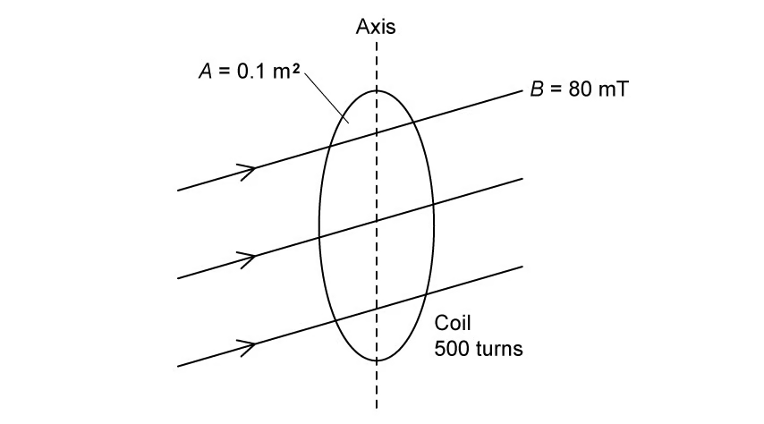
(c)(i) Define magnetic flux linkage. [1] (ii) Calculate its change when the coil rotates through \(90^\circ\). [2] [3 marks]
(d) The rotation takes \(300\ \mathrm{ms}\). Calculate average induced e.m.f. [3 marks]
Show mark scheme / model answer
- (a) Flux is the product of flux density and area perpendicular to the field; \(\Phi=BA\cos\theta\).
[3] - (b) \(\Phi=(0.080)(0.10)=8.0\times10^{-3}\ \mathrm{Wb}\).
[3] - (c) Flux linkage is \(N\Phi\); change \(=500(8.0\times10^{-3})=4.0\ \mathrm{Wb\ turns}\).
[3] - (d) \(|\mathcal E|=4.0/0.300=13\ \mathrm{V}\).
[3]
Example 9 · Magnet and coil observations · 20.2 SQ Easy Q3
(a) Complete the SI table for magnetic flux, magnetic flux linkage, e.m.f. and magnetic flux density. [4 marks]
(b) A magnet lowered into a coil deflects a centre-zero voltmeter to the right.
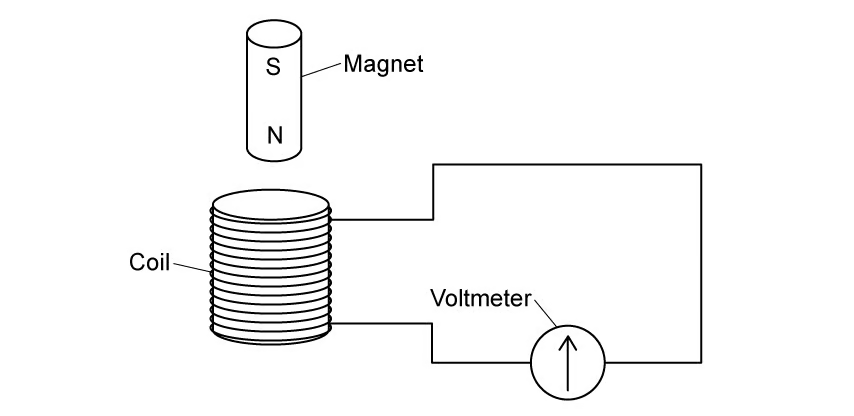
Sketch the needle when (i) the magnet is held at rest and (ii) removed faster than it entered. [4 marks]
(c) A magnet moves towards and away at steady rate. Explain why (i) there is a reading, (ii) magnitude varies and (iii) values are positive and negative. [5 marks]
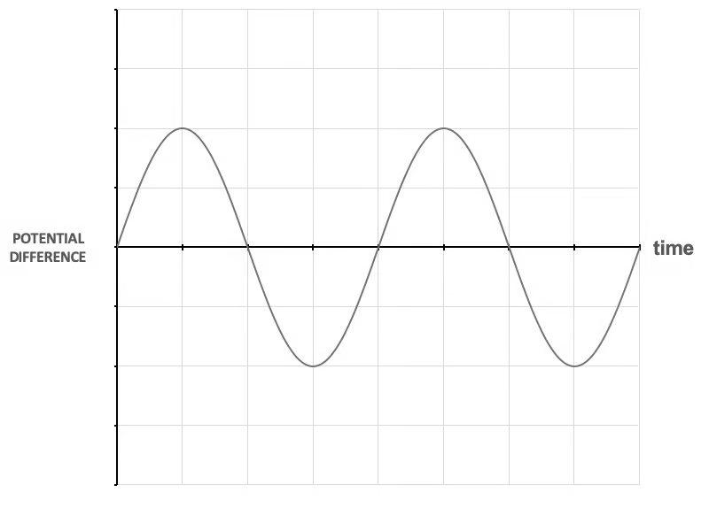
(d) The reading is \(1.5\ \mathrm{mV}\) for \(2.0\ \mathrm{s}\). Calculate change in flux linkage. [3 marks]
Show mark scheme / model answer
- (a) \(\Phi\): Wb; \(N\Phi\): Wb turns; \(\mathcal E\): V; \(B\): T.
[4] - (b)(i) Needle at zero.
[1](ii) Deflection to the left with greater magnitude.[3] - (c)(i) Movement changes flux linkage, inducing e.m.f.
[1] - (c)(ii) Rate of change varies with position, so e.m.f. magnitude varies.
[2] - (c)(iii) Direction of flux change reverses between approach and withdrawal, so induced polarity reverses.
[2] - (d) \(\Delta(N\Phi)=\mathcal E\Delta t=(1.5\times10^{-3})(2.0)=3.0\times10^{-3}\ \mathrm{Wb\ turns}\).
[3]
20.2 Electromagnetic Induction - Medium
Example 10 · Reversing current in a solenoid · 20.2 SQ Medium Q1
(a)(i) Define magnetic flux. [2] (ii) State Faraday’s law. [2] [4 marks]
(b) A 96-turn coil C surrounds a solenoid.
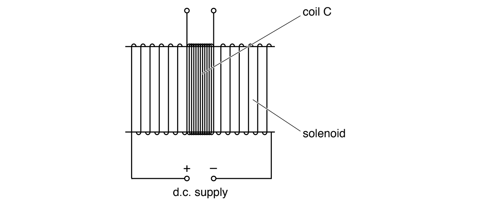
Flux is \(\Phi=6.8\times10^{-6}I\) Wb. Calculate average induced e.m.f. when \(3.5\ \mathrm{A}\) is reversed in \(2.4\ \mathrm{ms}\). [2 marks]
(c) The d.c. supply is replaced by a sinusoidal alternating supply. Describe qualitatively the e.m.f. induced in C. [2 marks]
Show mark scheme / model answer
- (a) Flux is \(BA\) normal to the field; Faraday’s law states induced e.m.f. equals rate of change of flux linkage.
[4] - (b) \(\Delta I=7.0\ \mathrm{A}\), so \(\Delta(N\Phi)=96(6.8\times10^{-6})(7.0)\). Divide by \(2.4\times10^{-3}\) to obtain \(1.9\ \mathrm{V}\).
[2] - (c) A sinusoidal alternating e.m.f. is induced at the same frequency, with a quarter-cycle phase difference from current/flux.
[2]
Example 11 · Nested solenoids and Lenz’s law · 20.2 SQ Medium Q2
A 2000-turn smaller solenoid of area \(1.2\times10^{-3}\ \mathrm{m^2}\) is inside an 800-turn larger solenoid of area \(7.8\times10^{-3}\ \mathrm{m^2}\).
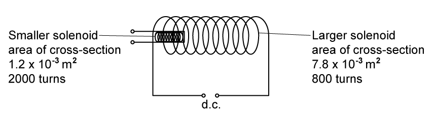
(a) Compare magnetic flux in the two solenoids. [1]
(b) Compare magnetic flux linkage. [1]
(c) State Lenz’s law. [2]
(d) The smaller solenoid terminals are connected and it is removed. Explain why a force is needed. [3 marks]
Show mark scheme / model answer
- (a) The larger solenoid has greater flux because \(\Phi=BA\) and its area is larger.
[1] - (b) Larger linkage is also greater: \(800(7.8)>2000(1.2)\) in common factors.
[1] - (c) Induced current acts in a direction that opposes the change causing it.
[2] - (d) Removal changes linkage and induces e.m.f./current in the smaller solenoid; its magnetic field interacts with the original field to produce an attractive force opposing removal.
[3]
Example 12 · Changing flux density through a square coil · 20.2 SQ Medium Q3
(a) Define magnetic flux linkage. [2 marks]
(b) A stationary square coil, side \(10\ \mathrm{cm}\) and 5 turns, has its plane perpendicular to the field.
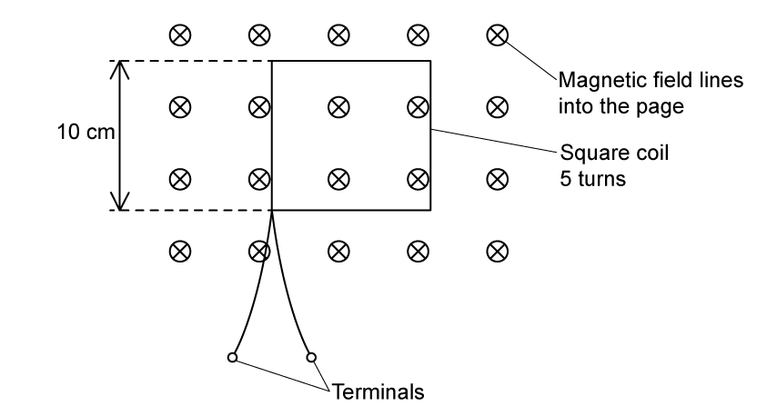
Flux density varies as shown.
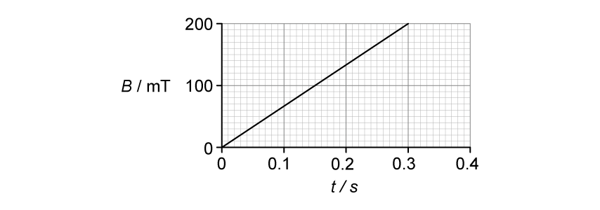
Determine flux linkage at \(t=0.30\ \mathrm{s}\), with unit. [3 marks]
(c)(i) State how the graph shows induced e.m.f. is constant from 0 to \(0.30\ \mathrm{s}\). [1] (ii) Calculate its magnitude. [2] [3 marks]
(d) The procedure is repeated with coil terminals connected. State and explain the effect on the coil. [3 marks]
Show mark scheme / model answer
- (a) Product of magnetic flux through one turn and number of turns.
[2] - (b) \(N\Phi=NBA=5(0.200)(0.10^2)=1.0\times10^{-2}\ \mathrm{Wb\ turns}\).
[3] - (c)(i) \(B\) and hence linkage change linearly, so their gradient is constant.
[1] - (c)(ii) \(|\mathcal E|=\Delta(N\Phi)/\Delta t=0.010/0.30=3.3\times10^{-2}\ \mathrm{V}\).
[2] - (d) Induced e.m.f. drives current. Forces act on current-carrying sides in the field, forcing opposite sides inward; alternatively, resistive heating raises coil temperature.
[3]
Chapter self-check
- Can you use both hand rules without confusing conventional current and electron flow?
- Can you identify when magnetic force is zero or maximum?
- Can you derive the radius of a charged particle’s circular path?
- Can you explain Hall voltage from charge separation?
- Can you sketch wire, coil and solenoid field patterns?
- Can you distinguish magnetic flux from flux linkage?
- Can you use the area and the correct angle in \(\Phi=BA\cos\theta\)?
- Can you explain the minus sign in Faraday-Lenz law?